운전면허-학과시험(필기)-1종-2종(2020년판) (1100-09-00 기출문제)
1과목: 임의구분
1. 다음 상황에서 가장 안전한 운전방법 2가지는? (답이 두개인 문제입니다. 정답은 1, 3번 입니다. 여기서는 1번을 누르면 정답 처리 됩니다.)
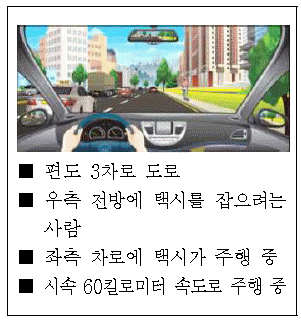
- 우측 전방의 사람이 택시를 잡기 위해 차도로 내려올 수 있으므로 주의하며 진행한다.
- 우측 전방의 사람이 택시를 잡기 위해 차도로 내려올 수 있으므로 전조등 불빛으로 경고를 준다.
- 2차로의 택시가 사람을 태우려고 3차로로 급히 들어올 수 있으므로 속도를 줄여 대비한다.
- 2차로의 택시가 사람을 태우려고 3차로로 급히 들어올 수 있으므로 앞차와의 거리를 좁혀 진행한다.
- 2차로의 택시가 3차로로 들어올 것을 대비해 신속히 2차로로 피해 준다.
(정답률: 72%)

2. 도심지 이면 도로를 주행하는 상황에서 가장 안전한 운전방법 2가지는? (답이 두개인 문제입니다. 정답은 1, 3번 입니다. 여기서는 1번을 누르면 정답 처리 됩니다.)
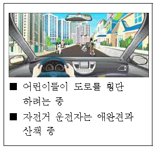
- 자전거와 산책하는 애완견이 갑자기 도로중앙으로 나올 수 있으므로 주의한다.
- 경음기를 사용해서 내 차의 진행을 알리고 자전거에게 양보하도록 한다.
- 어린이가 갑자기 도로 중앙으로 나올 수 있으므로 속도를 줄인다.
- 속도를 높여 자전거를 피해 신속히 통과한다.
- 전조등 불빛을 번쩍이면서 마주 오는 차에 주의를 준다.
(정답률: 70%)
3. 다음 상황에서 가장 안전한 운전방법 2가지는? (답이 두개인 문제입니다. 정답은 3, 5번 입니다. 여기서는 3번을 누르면 정답 처리 됩니다.)
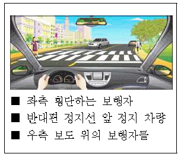
- 전방 횡단보도 직전에서 속도를 줄여 횡단보도를 통과한다.
- 횡단보도 좌측에 횡단하는 보행자가 있더라도 사고 가능성이 없다고 판단되면 통과한다.
- 좌측 보행자가 건너고 있으므로 일시정지하여 보행자의 횡단을 확인 후 횡단보도를 통과한다.
- 횡단보도 직전에 급정지하면 뒤따르는 차가 추돌할 수 있으므로 그냥 통과한다.
- 우측 보도 위에서 뛰어오는 보행자가 횡단보도를 건널 수 있으므로 일시정지하여 보행자의 안전을 우선해야 한다.
(정답률: 66%)
4. 다음 상황에서 동승자를 하차시킨 후 출발할 때 가장 위험한 상황 2가지는? (답이 두개인 문제입니다. 정답은 3, 4번 입니다. 여기서는 3번을 누르면 정답 처리 됩니다.)
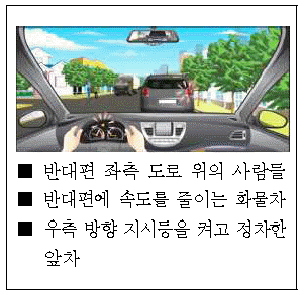
- 좌측 도로 위의 사람들이 서성거리고 있는 경우
- 반대편에 속도를 줄이던 화물차가 우회전하는 경우
- 정차한 앞 차량 운전자가 갑자기 차문을 열고 내리는 경우
- 좌측 도로에서 갑자기 우회전해 나오는 차량이 있는 경우
- 내 뒤쪽 차량이 우측에 갑자기 차를 정차시키는 경우
(정답률: 67%)
5. 다음 상황에서 주차된 A차량이 출발할 때 가장 주의해야 할 위험 요인 2가지는? (답이 두개인 문제입니다. 정답은 1, 4번 입니다. 여기서는 1번을 누르면 정답 처리 됩니다.)
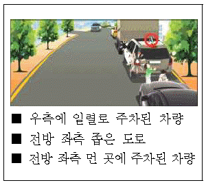
- 내 앞에 주차된 화물차 앞으로 갑자기 나올 수 있는 사람
- 화물차 앞 주차 차량의 출발
- 반대편 좌측 도로에서 좌회전할 수 있는 자전거
- A차량 바로 뒤쪽 놀이에 열중하고 있는 어린이
- 반대편 좌측 주차 차량의 우회전
(정답률: 64%)
6. A차량이 우회전하려 할 때 가장 주의해야 할 위험 상황 2가지는? (답이 두개인 문제입니다. 정답은 1, 2번 입니다. 여기서는 1번을 누르면 정답 처리 됩니다.)
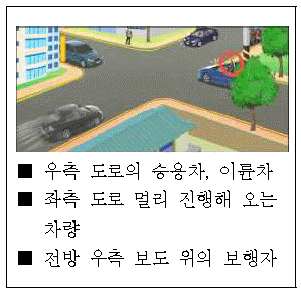
- 좌측 및 전방을 확인하고 우회전하는 순간 우측도로에서 나오는 이륜차를 만날 수 있다.
- 좌측 도로에서 오는 차가 멀리 있다고 생각하여 우회전하는데 내 판단보다 더 빠른 속도로 달려와 만날 수 있다.
- 우회전하는 순간 전방 우측 도로에서 우회전하는 차량과 만날 수 있다.
- 우회전하는 순간 좌측에서 오는 차가 있어 정지하는데 내 뒤 차량이 먼저 앞지르기하며 만날 수 있다.
- 우회전하는데 전방 우측 보도 위에 걸어가는 보행자와 만날 수 있다.
(정답률: 63%)
7. 다음 도로상황에서 대비하여야할 위험 2개를 고르시오. (답이 두개인 문제입니다. 정답은 2, 4번 입니다. 여기서는 2번을 누르면 정답 처리 됩니다.)
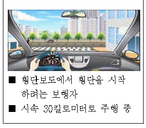
- 역주행하는 자동차와 충돌할 수 있다.
- 우측 건물 모퉁이에서 자전거가 갑자기 나타날 수 있다.
- 우회전하여 들어오는 차와 충돌할 수 있다.
- 뛰어서 횡단하는 보행자를 만날 수 있다.
- 우측에서 좌측으로 직진하는 차와 충돌 할 수 있다.
(정답률: 63%)
8. 다음 도로상황에서 가장 주의해야 할 위험상황 2가지는? (답이 두개인 문제입니다. 정답은 4, 5번 입니다. 여기서는 4번을 누르면 정답 처리 됩니다.)
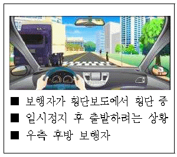
- 뒤쪽에서 앞지르기를 시도하는 차와 충돌할 수 있다.
- 반대편 화물차가 속도를 높일 수 있다.
- 반대편 화물차가 유턴할 수 있다.
- 반대편 차 뒤에서 길을 건너는 보행자와 마주칠 수 있다.
- 오른쪽 뒤편에서 횡단보도로 뛰어드는 보행자가 있을 수 있다.
(정답률: 62%)
9. 다음 상황에서 가장 안전한 운전방법 2가지는? (답이 두개인 문제입니다. 정답은 2, 5번 입니다. 여기서는 2번을 누르면 정답 처리 됩니다.)
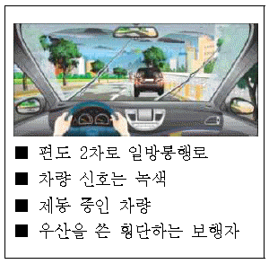
- 녹색 신호이므로 1차로로 변경을 하여 속도를 내어 진행한다.
- 브레이크 페달을 여러 번 나누어 밟아 정지한다.
- 추돌 우려가 있으므로 1차로로 변경하여 그대로 진행한다.
- 급제동하여 정지한다.
- 빗길이므로 핸들을 꽉잡아 방향을 유지한다.
(정답률: 58%)
10. 다음 상황에서 직진할 때 가장 안전한 운전방법 2가지는? (답이 두개인 문제입니다. 정답은 1, 3번 입니다. 여기서는 1번을 누르면 정답 처리 됩니다.)
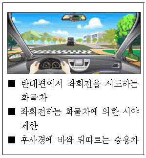
- 내 차가 급정지 시 뒤따르는 차가 추돌할 수 있으므로 서서히 감속하여 정지선 앞에 정지한다.
- 화물차와 충돌할 위험이 있으므로 화물차가 좌회전하자마자 바로 진행한다.
- 화물차 뒤쪽 상황을 확인할 수 없으므로 일시정지하여 안전을 확인한 후 진행한다.
- 화물차가 좌회전하고 있고 뒤따르는 차량과의 추돌 위험이 있으므로 반대 차로 부근으로 진행한다.
- 뒤따르는 차량의 추돌 위험이 있으므로 속도를 높여 가장자리 공간을 이용하여 그대로 진행한다.
(정답률: 54%)
11. 버스가 우회전하려고 한다. 사고 발생 가능성이 가장 높은 2가지는? (답이 두개인 문제입니다. 정답은 1, 4번 입니다. 여기서는 1번을 누르면 정답 처리 됩니다.)
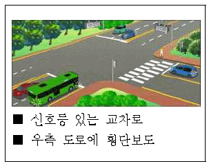
- 우측 횡단보도 보행 신호기에 녹색 신호가 점멸할 경우 뒤늦게 달려들어 오는 보행자와의 충돌
- 우측도로에서 좌회전하는 차와의 충돌
- 버스 좌측 1차로에서 직진하는 차와의 충돌
- 반대편 도로 1차로에서 좌회전하는 차와의 충돌
- 반대편 도로 2차로에서 직진하려는 차와의 충돌
(정답률: 63%)
12. 경운기를 앞지르기하려 한다. 이때 사고 발생 가능성이 가장 높은 2가지는? (답이 두개인 문제입니다. 정답은 2, 3번 입니다. 여기서는 2번을 누르면 정답 처리 됩니다.)
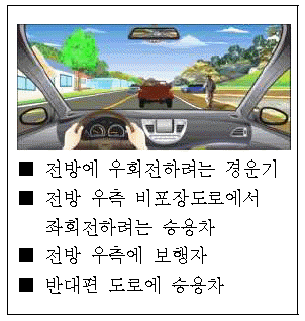
- 전방 우측 길 가장자리로 보행하는 보행자와의 충돌
- 반대편에서 달려오는 차량과의 정면충돌
- 비포장도로에서 나와 좌회전하려고 중앙선을 넘어오는 차량과의 충돌
- 비포장도로로 우회전하려는 경운기와의 충돌
- 뒤따라오는 차량과의 충돌
(정답률: 53%)
13. 다음과 같은 도로에서 A차량이 동승자를 내려주기 위해 잠시 정차했다가 출발할 때 사고 발생 가능성이 가장 높은 2가지는? (답이 두개인 문제입니다. 정답은 2, 5번 입니다. 여기서는 2번을 누르면 정답 처리 됩니다.)
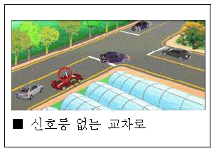
- 반대편 도로 차량이 직진하면서 A차와 정면충돌
- 뒤따라오던 차량이 A차를 앞지르기하다가 A차가 출발하면서 일어나는 충돌
- A차량 앞에서 우회전 중이던 차량과 A차량과의 추돌
- 우측 도로에서 우측 방향지시등을 켜고 대기 중이던 차량과 A차량과의 충돌
- A차량이 출발해 직진할 때 반대편 도로 좌회전 차량과의 충돌
(정답률: 57%)
14. 내리막길을 빠른 속도로 내려갈 때 사고 발생 가능성이 가장 높은 2가지는? (답이 두개인 문제입니다. 정답은 4, 5번 입니다. 여기서는 4번을 누르면 정답 처리 됩니다.)
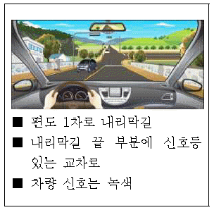
- 반대편 도로에서 올라오고 있는 차량과의 충돌
- 교차로 반대편 도로에서 진행하는 차와의 충돌
- 반대편 보도 위에 걸어가고 있는 보행자와의 충돌
- 전방 교차로 차량 신호가 바뀌면서 우측 도로에서 좌회전하는 차량과의 충돌
- 전방 교차로 차량 신호가 바뀌면서 급정지하는 순간 뒤따르는 차와의 추돌
(정답률: 58%)
15. A차량이 진행 중이다. 가장 안전한 운전방법 2가지는? (답이 두개인 문제입니다. 정답은 2, 4번 입니다. 여기서는 2번을 누르면 정답 처리 됩니다.)
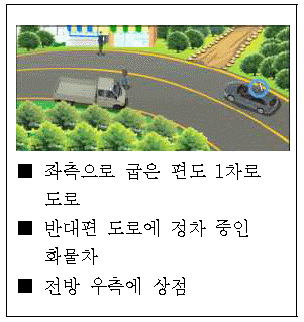
- 차량이 원심력에 의해 도로 밖으로 이탈할 수 있으므로 중앙선을 밟고 주행한다.
- 반대편 도로에서 정차 중인 차량을 앞지르기하려고 중앙선을 넘어오는 차량이 있을 수 있으므로 이에 대비한다.
- 전방 우측 상점 앞 보행자와의 사고를 예방하기 위해 중앙선 쪽으로 신속히 진행한다.
- 반대편 도로에 정차 중인 차량의 운전자가 갑자기 건너올 수 있으므로 주의하며 진행한다.
- 굽은 도로에서는 주변의 위험 요인을 전부 예측하기가 어렵기 때문에 신속하게 커브길을 벗어나도록 한다.
(정답률: 58%)
16. 다음 상황에서 우선적으로 대비하여야 할 위험 상황 2가지는? (답이 두개인 문제입니다. 정답은 2, 3번 입니다. 여기서는 2번을 누르면 정답 처리 됩니다.)
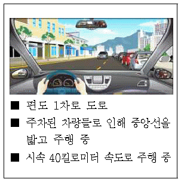
- 오른쪽 주차된 차량 중에서 고장으로 방치된 차가 있을 수 있다.
- 반대편에서 오는 차와 충돌의 위험이 있다.
- 오른쪽 주차된 차들 사이로 뛰어나오는 어린이가 있을 수 있다.
- 반대편 차가 좌측에 정차할 수 있다.
- 왼쪽 건물에서 나오는 보행자가 있을 수 있다.
(정답률: 58%)
17. 다음 상황에서 가장 안전한 운전방법 2가지는? (답이 두개인 문제입니다. 정답은 1, 2번 입니다. 여기서는 1번을 누르면 정답 처리 됩니다.)
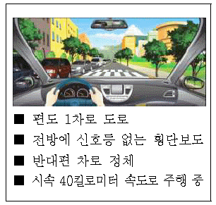
- 횡단보도 앞에서 일시정지하여 보행자가 있는지 살핀다.
- 횡단보도가 아닌 곳에서도 차 사이로 횡단하는 보행자가 있을 수 있으므로 서행한다.
- 앞서 가는 차가 멀리 있으므로 앞차와의 거리를 더욱 좁힌다.
- 반대편 차들이 움직일 때까지 정지하고 기다린다.
- 전방 차량이 멀리 있으므로 속도를 높여 주행한다.
(정답률: 59%)
18. 다음과 같은 야간 도로상황에서 운전할 때 특히 주의하여야 할 위험 2가지는? (답이 두개인 문제입니다. 정답은 1, 2번 입니다. 여기서는 1번을 누르면 정답 처리 됩니다.)
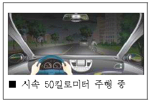
- 도로의 우측부분에서 역주행하는 자전거
- 도로 건너편에서 차도를 횡단하려는 사람
- 내 차 뒤로 무단횡단 하는 보행자
- 방향지시등을 켜고 우회전 하려는 후방 차량
- 우측 주차 차량 안에 탑승한 운전자
(정답률: 60%)
19. 겨울철에 복공판(철판)이 놓인 지하철 공사장에 들어서고 있다. 가장 안전한 운전방법 2가지는? (답이 두개인 문제입니다. 정답은 1, 5번 입니다. 여기서는 1번을 누르면 정답 처리 됩니다.)
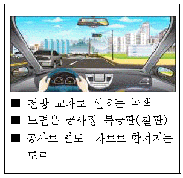
- 엔진 브레이크로 감속하며 서서히 1차로로 진입한다.
- 급제동하여 속도를 줄이면서 1차로로 차로를 변경한다.
- 바로 1차로로 변경하며 앞차와의 거리를 좁힌다.
- 속도를 높여 앞차의 앞으로 빠져나간다.
- 노면이 미끄러우므로 조심스럽게 핸들을 조작한다.
(정답률: 56%)
20. 다음 상황에서 가장 주의해야 할 위험 요인 2가지는? (답이 두개인 문제입니다. 정답은 4, 5번 입니다. 여기서는 4번을 누르면 정답 처리 됩니다.)
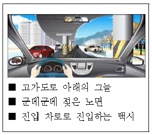
- 반대편 뒤쪽의 화물차
- 내 뒤를 따르는 차
- 전방의 앞차
- 고가 밑 그늘진 노면
- 내 차 앞으로 진입하려는 택시
(정답률: 53%)
2과목: 임의구분
21. 우측 주유소로 들어가려고 할 때 사고 발생 가능성이 가장 높은 2가지는? (답이 두개인 문제입니다. 정답은 2, 3번 입니다. 여기서는 2번을 누르면 정답 처리 됩니다.)
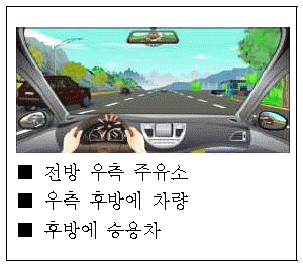
- 주유를 마친 후 속도를 높여 차도로 진입하는 차량과의 충돌
- 우측으로 차로 변경하려고 급제동하는 순간 후방 차량과의 추돌
- 우측으로 급차로 변경하는 순간 우측 후방 차량과의 충돌
- 제한속도보다 느리게 주행하는 1차로 차량과의 충돌
- 과속으로 주행하는 반대편 2차로 차량과의 정면충돌
(정답률: 53%)
22. 다음과 같은 도로를 주행할 때 사고 발생 가능성이 가장 높은 경우 2가지는? (답이 두개인 문제입니다. 정답은 1, 4번 입니다. 여기서는 1번을 누르면 정답 처리 됩니다.)
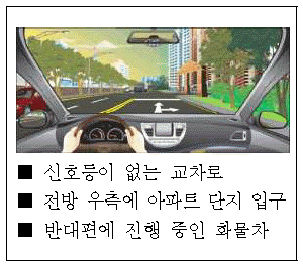
- 직진할 때 반대편 1차로의 화물차가 좌회전하는 경우
- 직진할 때 내 뒤에 있는 후방 차량이 우회전하는 경우
- 우회전 할 때 반대편 2차로의 승용차가 직진하는 경우
- 직진할 때 반대편 1차로의 화물차 뒤에서 승용차가 아파트 입구로 좌회전하는 경우
- 우회전 할 때 반대편 화물차가 직진하는 경우
(정답률: 52%)
23. 다음 상황에서 오르막길을 올라가는 화물차를 앞지르기하면 안 되는 가장 큰 이유 2가지는? (답이 두개인 문제입니다. 정답은 2, 4번 입니다. 여기서는 2번을 누르면 정답 처리 됩니다.)
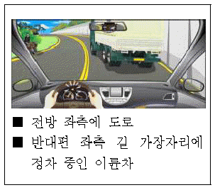
- 반대편 길 가장자리에 이륜차가 정차하고 있으므로
- 화물차가 좌측 도로로 좌회전할 수 있으므로
- 후방 차량이 서행으로 진행할 수 있으므로
- 반대편에서 내려오는 차량이 보이지 않으므로
- 화물차가 계속해서 서행할 수 있으므로
(정답률: 50%)
24. 다음 상황에서 우선적으로 예측해 볼 수 있는 위험 상황 2가지는? (답이 두개인 문제입니다. 정답은 3, 5번 입니다. 여기서는 3번을 누르면 정답 처리 됩니다.)
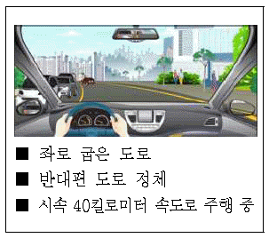
- 반대편 차량이 급제동할 수 있다.
- 전방의 차량이 우회전할 수 있다.
- 보행자가 반대편 차들 사이에서 뛰어나올 수 있다.
- 반대편 도로 차들 중에 한 대가 후진할 수 있다.
- 반대편 차량들 중에 한 대가 유턴할 수 있다.
(정답률: 55%)
25. 대형차의 바로 뒤를 따르고 있는 상황에서 가장 안전한 운전방법 2가지는? (답이 두개인 문제입니다. 정답은 1, 5번 입니다. 여기서는 1번을 누르면 정답 처리 됩니다.)
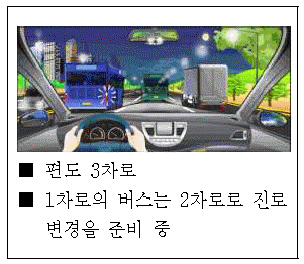
- 대형 화물차가 내 차를 발견하지 못할 수 있기 때문에 대형차의 움직임에 주의한다.
- 전방 2차로를 주행 중인 버스가 갑자기 속도를 높일 수 있기 때문에 주의해야 한다.
- 뒤따르는 차가 차로를 변경할 수 있기 때문에 주의해야 한다.
- 마주 오는 차의 전조등 불빛으로 눈부심 현상이 올 수 있기 때문에 주의해야 한다.
- 전방의 상황을 확인할 수 없기 때문에 충분한 안전거리를 확보하고 전방 상황을 수시로 확인하는 등 안전에 주의해야 한다.
(정답률: 52%)
26. 다음 상황에서 A차량이 주의해야 할 가장 위험한 요인 2가지는? (답이 두개인 문제입니다. 정답은 3, 5번 입니다. 여기서는 3번을 누르면 정답 처리 됩니다.)
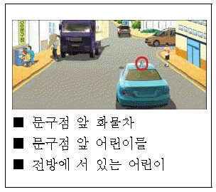
- 전방의 화물차 앞에서 물건을 운반 중인 사람
- 전방 우측에 제동등이 켜져 있는 정지 중인 차량
- 우측 도로에서 갑자기 나오는 차량
- 문구점 앞에서 오락에 열중하고 있는 어린이
- 좌측 문구점을 바라보며 서 있는 우측 전방의 어린이
(정답률: 48%)
27. 다음 도로상황에서 사고발생 가능성이 가장 높은 2가지는? (답이 두개인 문제입니다. 정답은 2, 5번 입니다. 여기서는 2번을 누르면 정답 처리 됩니다.)
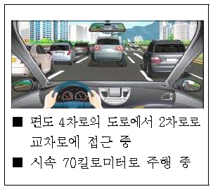
- 왼쪽 1차로의 차가 갑자기 직진할 수 있다.
- 황색신호가 켜질 경우 앞차가 급제동을 할 수 있다.
- 오른쪽 3차로의 차가 갑자기 우회전을 시도할 수 있다.
- 앞차가 3차로로 차로를 변경할 수 있다.
- 신호가 바뀌어 급제동할 경우 뒤차에게 추돌사고를 당할 수 있다.
(정답률: 49%)
28. 다음 도로상황에서 좌회전하기 위해 불법으로 중앙선을 넘어 전방 좌회전 차로로 진입하는 경우 가장 위험한 이유 2가지는? (답이 두개인 문제입니다. 정답은 2, 3번 입니다. 여기서는 2번을 누르면 정답 처리 됩니다.)
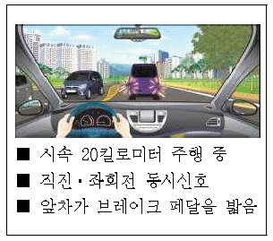
- 반대편 차량이 갑자기 후진할 수 있다.
- 앞 차가 현 위치에서 유턴할 수 있다.
- 브레이크 페달을 밟은 앞 차 앞으로 보행자가 나타날 수 있다.
- 브레이크 페달을 밟은 앞 차가 갑자기 우측 차로로 차로변경 할 수 있다.
- 앞 차의 선행차가 2차로에서 우회전 할 수 있다.
(정답률: 48%)
29. 수동 변속기 차량으로 눈 쌓인 언덕길을 올라갈 때 가장 안전한 운전방법 2가지는? (답이 두개인 문제입니다. 정답은 1, 4번 입니다. 여기서는 1번을 누르면 정답 처리 됩니다.)
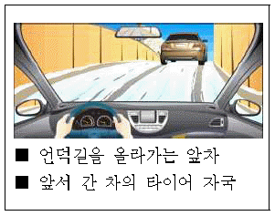
- 저단 기어를 이용하여 부드럽게 올라간다.
- 고단 기어를 이용하여 세게 차고 올라간다.
- 스노 체인을 장착한 경우에는 속도를 높여 올라간다.
- 앞차의 바퀴 자국을 따라 올라간다.
- 앞차의 바퀴 자국을 피해 올라간다.
(정답률: 50%)
30. 다음 상황에서 가장 주의해야 할 위험 요인 2가지는? (답이 두개인 문제입니다. 정답은 2, 4번 입니다. 여기서는 2번을 누르면 정답 처리 됩니다.)
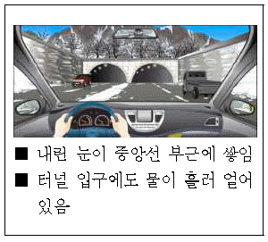
- 터널 안의 상황
- 우측 전방의 차
- 터널 안 진행 차
- 터널 직전의 노면
- 내 뒤를 따르는 차
(정답률: 47%)
31. 다음 상황에서 사고 발생 가능성이 가장 높은 2가지는? (답이 두개인 문제입니다. 정답은 1, 3번 입니다. 여기서는 1번을 누르면 정답 처리 됩니다.)
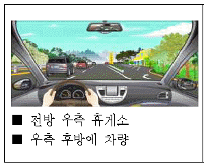
- 휴게소에 진입하기 위해 급감속하다 2차로에 뒤따르는 차량과 충돌할 수 있다.
- 휴게소로 차로 변경하는 순간 앞지르기 하는 뒤차와 충돌할 수 있다.
- 휴게소로 진입하기 위하여 차로를 급하게 변경하다가 우측 뒤차와 충돌할 수 있다.
- 2차로에서 1차로로 급하게 차로 변경하다가 우측 뒤차와 충돌할 수 있다.
- 2차로에서 과속으로 주행하다 우측 뒤차와 충돌할 수 있다.
(정답률: 46%)
32. 야간 운전 시 다음 상황에서 가장 적절한 운전 방법 2가지는? (답이 두개인 문제입니다. 정답은 4, 5번 입니다. 여기서는 4번을 누르면 정답 처리 됩니다.)
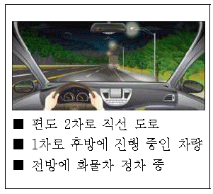
- 정차 중인 화물차에서 어떠한 위험 상황이 발생할지 모르므로 재빠르게 1차로로 차로 변경한다.
- 정차 중인 화물차에 경음기를 계속 울리면서 진행한다.
- 전방 우측 화물차 뒤에 일단 정차한 후 앞차가 출발할 때까지 기다린다.
- 정차 중인 화물차 앞이나 그 주변에 위험 상황이 발생할 수 있으므로 속도를 줄이며 주의한다.
- 1차로로 차로 변경 시 안전을 확인한 후 차로 변경을 시도한다.
(정답률: 43%)
33. 다음 상황에서 가장 안전한 운전 방법 2가지는? (답이 두개인 문제입니다. 정답은 2, 4번 입니다. 여기서는 2번을 누르면 정답 처리 됩니다.)
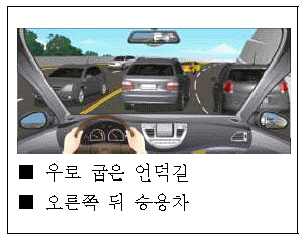
- 중앙선이 실선이므로 반대편 차량들의 움직임에는 주의를 기울이지 않아도 된다.
- 앞 차량의 급제동이나 급차로 변경에 대비해 주의하며 주행한다.
- 앞 차량이 속도를 높여 주행하도록 전조등 불빛으로 재촉한다.
- 앞차와 거리를 두면서 속도를 줄여 주행한다.
- 앞 차량 우측으로 재빠르게 차로 변경한다.
(정답률: 51%)
34. 다음 상황에서 가장 안전한 운전 방법 2가지는? (답이 두개인 문제입니다. 정답은 1, 2번 입니다. 여기서는 1번을 누르면 정답 처리 됩니다.)
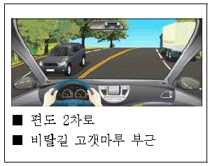
- 전방 우측 화물차가 차로 변경할 수 있으므로 안전거리를 둔다.
- 고갯마루 너머의 상황을 알 수 없기 때문에 주의하여야 한다.
- 강한 바람이 불어올 수 있기 때문에 핸들을 가볍게 잡아야 한다.
- 뒤따르는 차를 위해 속도를 높여 통과하여야 한다.
- 뒤따르는 차의 운전자에게 앞지르기하라고 양보 신호를 보낸다.
(정답률: 53%)
35. 급커브 길을 주행 중이다. 가장 안전한 운전 방법 2가지는? (답이 두개인 문제입니다. 정답은 1, 2번 입니다. 여기서는 1번을 누르면 정답 처리 됩니다.)
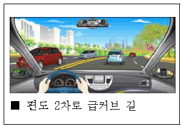
- 마주 오는 차가 중앙선을 넘어올 수 있음을 예상하고 전방을 잘 살핀다.
- 원심력으로 차로를 벗어날 수 있기 때문에 속도를 미리 줄인다.
- 스탠딩 웨이브 현상을 예방하기 위해 속도를 높인다.
- 원심력에 대비하여 차로의 가장자리를 주행한다.
- 뒤따르는 차의 앞지르기에 대비하여 후방을 잘 살핀다.
(정답률: 51%)
36. 다음 도로상황에서 가장 안전한 운전방법 2가지는? (답이 두개인 문제입니다. 정답은 1, 4번 입니다. 여기서는 1번을 누르면 정답 처리 됩니다.)
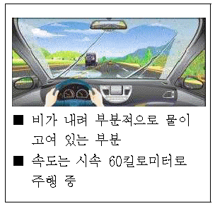
- 수막현상이 발생하여 미끄러질 수 있으므로 감속 주행한다.
- 물웅덩이를 만날 경우 수막현상이 발생하지 않도록 급제동한다.
- 고인 물이 튀어 앞이 보이지 않을 때는 브레이크 페달을 세게 밟아 속도를 줄인다.
- 맞은편 차량에 의해 고인 물이 튈 수 있으므로 가급적 2차로로 주행한다.
- 물웅덩이를 만날 경우 약간 속도를 높여 통과한다.
(정답률: 48%)
37. 눈길 교통상황에서 안전한 운전방법 2가지는? (답이 두개인 문제입니다. 정답은 1, 5번 입니다. 여기서는 1번을 누르면 정답 처리 됩니다.)
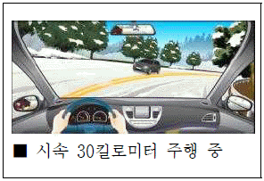
- 앞 차의 바퀴자국을 따라서 주행하는 것이 안전하며 중앙선과 거리를 두는 것이 좋다.
- 눈길이나 빙판길에서는 공주거리가 길어지므로 평소보다 안전거리를 더 두어야 한다.
- 반대편 차가 커브길에서 브레이크 페달을 밟다가 중앙선을 넘어올 수 있으므로 빨리 지나치도록 한다.
- 커브길에서 브레이크 페달을 세게 밟아 속도를 줄인다.
- 눈길이나 빙판길에서는 감속하여 주행하는 것이 좋다.
(정답률: 49%)
38. 반대편 차량의 전조등 불빛이 너무 밝을 때 가장 안전한 운전방법 2가지는? (답이 두개인 문제입니다. 정답은 2, 4번 입니다. 여기서는 2번을 누르면 정답 처리 됩니다.)
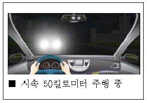
- 증발현상으로 중앙선에 서 있는 보행자가 보이지 않을 수 있으므로 급제동한다.
- 현혹현상이 발생할 수 있으므로 속도를 충분히 줄여 위험이 있는지 확인한다.
- 보행자 등이 잘 보이지 않으므로 상향등을 켜서 확인한다.
- 1차로 보다는 2차로로 주행하며 불빛을 바로 보지 않도록 한다.
- 불빛이 너무 밝을 때는 전방 확인이 어려우므로 가급적 빨리 지나간다.
(정답률: 48%)
39. A차가 버스를 앞지르기하려고 한다. 사고 발생 가능성이 가장 높은 2가지는? (답이 두개인 문제입니다. 정답은 2, 3번 입니다. 여기서는 2번을 누르면 정답 처리 됩니다.)
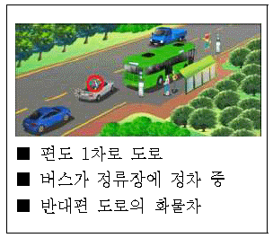
- A차 뒤에서 진행하던 차량의 안전거리 미확보로 인한 추돌
- 앞지르기 시 반대편 도로에서 달려오는 화물차와의 충돌
- 버스에서 내려 버스 앞으로 뛰어 건너는 보행자와의 충돌
- 정류장에서 버스를 기다리는 사람과의 충돌
- 정차했던 버스가 출발하는 순간 버스와 반대편 화물차와의 충돌
(정답률: 49%)
40. 다음 상황에서 주행할 때 가장 안전한 운전방법 2가지는? (답이 두개인 문제입니다. 정답은 1, 5번 입니다. 여기서는 1번을 누르면 정답 처리 됩니다.)
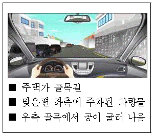
- 공을 주우러 어린이가 뛰어나올지 모르니 일시정지하고 상황을 지켜본다.
- 우측 골목에서 굴러온 공은 좌측이나 내앞으로 굴러올 수도 있으므로 우측 가장 자리로 붙여서 계속 주행한다.
- 주차된 차량들은 움직이지 않으므로 주의 하지 않아도 된다.
- 공만 굴러 나왔으므로 경음기를 사용하며 달려오던 속도 그대로 주행한다.
- 주차된 차량들 중 갑자기 출발하는 차량이 있을 수 있으므로 주의한다.
(정답률: 48%)
3과목: 임의구분
41. 진흙탕인 비포장도로를 주행할 때 가장 안전한 운전방법 2가지는? (답이 두개인 문제입니다. 정답은 3, 5번 입니다. 여기서는 3번을 누르면 정답 처리 됩니다.)
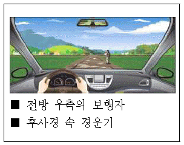
- 보행자를 보호하기 위하여 급제동한다.
- 전방에 차량이 없으므로 속도를 줄이지 않고 주행한다.
- 보행자에게 고인 물이 튀지 않도록 주의한다.
- 뒤따르는 경운기에 방해가 되지 않도록 신속하게 주행한다.
- 노면이 젖어 미끄럽기 때문에 서행한다.
(정답률: 48%)
42. 다음에서 가장 위험한 상황 2가지는? (답이 두개인 문제입니다. 정답은 2, 4번 입니다. 여기서는 2번을 누르면 정답 처리 됩니다.)
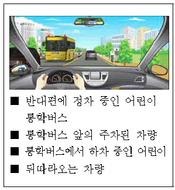
- 어린이들을 승하차시킨 통학버스가 갑자기 후진할 수 있다.
- 통학버스에서 하차한 어린이가 통학버스 앞으로 갑자기 횡단할 수 있다.
- 속도를 줄이는 내 차 뒤를 따르는 차량이 있다.
- 반대편 통학버스 뒤에서 이륜차가 통학버스를 앞지르기할 수 있다.
- 반대편 통학버스 앞에 주차된 차량이 출발할 수 있다.
(정답률: 47%)
43. A차량이 손수레를 앞지르기할 경우 가장 위험한 상황 2가지는? (답이 두개인 문제입니다. 정답은 1, 2번 입니다. 여기서는 1번을 누르면 정답 처리 됩니다.)
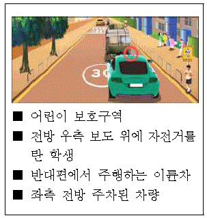
- 전방 우측 보도 위에 자전거를 탄 학생이 손수레 앞으로 횡단하는 경우
- 손수레에 가려진 반대편의 이륜차가 속도를 내며 달려오는 경우
- 앞지르기하려는 도중 손수레가 그 자리에 정지하는 경우
- A차량 우측 뒤쪽의 어린이가 학원 차를 기다리는 경우
- 반대편 전방 좌측의 차량이 계속 주차하고 있는 경우
(정답률: 43%)
44. 다음 도로상황에서 가장 안전한 운전행동 2가지는? (답이 두개인 문제입니다. 정답은 2, 4번 입니다. 여기서는 2번을 누르면 정답 처리 됩니다.)
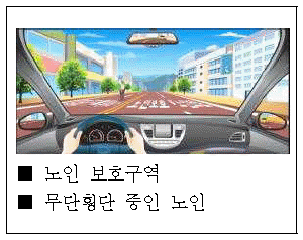
- 경음기를 사용하여 보행자에게 위험을 알린다.
- 비상등을 켜서 뒤차에게 위험을 알린다.
- 정지하면 뒤차의 앞지르기가 예상되므로 속도를 줄이며 통과한다.
- 보행자가 도로를 건너갈 때까지 충분한 거리를 두고 일시정지하다.
- 2차로로 차로를 변경하여 통과한다.
(정답률: 40%)
45. 다음 도로상황에서 발생할 수 있는 가장 위험한 요인 2가지는? (답이 두개인 문제입니다. 정답은 2, 5번 입니다. 여기서는 2번을 누르면 정답 처리 됩니다.)
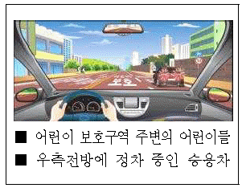
- 오른쪽 정차한 승용차가 갑자기 출발할 수 있다.
- 오른쪽 승용차 앞으로 어린이가 뛰어나올수 있다.
- 오른쪽 정차한 승용차가 출발할 수 있다.
- 속도를 줄이면 뒤차에게 추돌사고를 당할 수 있다.
- 좌측 보도 위에서 놀던 어린이가 도로를 횡단할 수 있다.
(정답률: 47%)
46. 다음 도로상황에서 가장 안전한 운전방법 2가지는? (답이 두개인 문제입니다. 정답은 3, 4번 입니다. 여기서는 3번을 누르면 정답 처리 됩니다.)
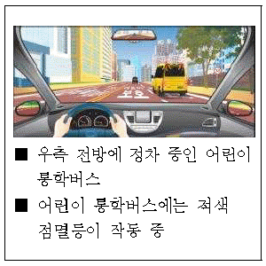
- 경음기로 어린이에게 위험을 알리며 지나간다.
- 전조등으로 어린이통학버스 운전자에게 위험을 알리며 지나간다.
- 비상등을 켜서 뒤차에게 위험을 알리며 일시정지하다.
- 어린이통학버스에 이르기 전에 일시정지하였다가 서행으로 지나간다.
- 비상등을 켜서 뒤차에게 위험을 알리며 지나간다.
(정답률: 38%)
47. 보행신호기의 녹색점멸신호가 거의 끝난 상태에서 먼저 교차로로 진입하면 위험한 이유 2가지는? (답이 두개인 문제입니다. 정답은 3, 5번 입니다. 여기서는 3번을 누르면 정답 처리 됩니다.)
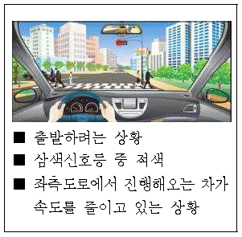
- 내 뒤차가 중앙선을 넘어 좌회전을 할 수 있으므로
- 좌측도로에서 속도를 줄이던 차가 갑자기 우회전을 할 수 있으므로
- 횡단보도를 거의 건너간 우측 보행자가 갑자기 방향을 바꿔 되돌아 갈 수 있으므로
- 내 차 후방 오른쪽 오토바이가 같이 횡단보도를 통과할 수 있으므로
- 좌측도로에서 속도를 줄이던 차가 좌회전하기 위해 교차로로 진입할 수 있으므로
(정답률: 38%)
48. 좌회전하기 위해 1차로로 차로 변경할 때 방향지시등을 켜지 않았을 경우 만날수 있는 사고 위험 2가지는? (답이 두개인 문제입니다. 정답은 4, 5번 입니다. 여기서는 4번을 누르면 정답 처리 됩니다.)
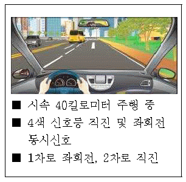
- 내 차 좌측에서 갑자기 유턴하는 오토바이
- 1차로 후방에서 불법유턴 하는 승용차
- 1차로 전방 승합차의 갑작스러운 급제동
- 내 차 앞으로 차로변경하려고 속도를 높이는 1차로 후방 승용차
- 내 차 뒤에서 좌회전하려는 오토바이
(정답률: 43%)
49. 버스가 갑자기 속도를 줄이는 것을 보고 2차로로 차로변경을 하려고 할 때 사고발생 가능성이 가장 높은 2가지는? (답이 두개인 문제입니다. 정답은 1, 4번 입니다. 여기서는 1번을 누르면 정답 처리 됩니다.)
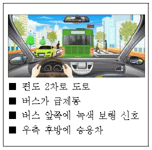
- 횡단보도 좌ㆍ우측에서 건너는 보행자와의 충돌
- 반대편 차량과의 충돌
- 반대편 차량과 보행자와의 충돌
- 2차로를 진행 중이던 뒤차와의 충돌
- 내 뒤를 따라오던 차량과 2차로 주행하던 차와의 충돌
(정답률: 39%)
50. A차량이 좌회전하려고 할 때 사고 발생 가능성이 가장 높은 것 2가지는? (답이 두개인 문제입니다. 정답은 1, 5번 입니다. 여기서는 1번을 누르면 정답 처리 됩니다.)
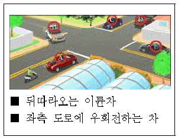
- 반대편 C차량이 직진하면서 마주치는 충돌
- 좌측 도로에서 우회전하는 B차량과의 충돌
- 뒤따라오던 이륜차와의 추돌
- 앞서 교차로를 통과하여 진행 중인 D차량과의 추돌
- 우측 도로에서 직진하는 E차량과의 충돌
(정답률: 44%)
51. 다음과 같이 급차로 변경을 할 경우 사고 발생 가능성이 가장 높은 2가지는? (답이 두개인 문제입니다. 정답은 1, 5번 입니다. 여기서는 1번을 누르면 정답 처리 됩니다.)
- 승합차 앞으로 무단 횡단하는 사람과의 충돌
- 반대편 차로 차량과의 충돌
- 뒤따르는 이륜차와의 추돌
- 반대 차로에서 차로 변경하는 차량과의 충돌
- 과속으로 달려오는 1차로에서 뒤따르는 차량과의 추돌
(정답률: 39%)
52. 다음 상황에서 가장 안전한 운전방법 2가지는? (답이 두개인 문제입니다. 정답은 2, 4번 입니다. 여기서는 2번을 누르면 정답 처리 됩니다.)
- 너무 가까이 접근하지 않도록 지속적으로 경음기를 울린다.
- 차로를 급히 변경하는 이륜차에 대비하여 안전거리를 충분히 유지한다.
- 위험하게 끼어드는 이륜차와의 충돌에 대비해 앞차와 거리를 좁힌다.
- 이륜차 집단과 충돌하지 않도록 속도를 줄인다.
- 속도를 높여서 이륜차 무리 속에서 빠져나온다.
(정답률: 40%)
53. 다음 상황에서 가장 안전한 운전방법 2가지는? (답이 두개인 문제입니다. 정답은 3, 4번 입니다. 여기서는 3번을 누르면 정답 처리 됩니다.)
- 반대편에 차량이 나타날 수 있으므로 차가오기 전에 빨리 중앙선을 넘어 진행한다.
- 전방 공사 구간을 보고 갑자기 속도를 줄이면 뒤따라오는 차량과 사고 가능성이 있으므로 빠르게 진행한다.
- 전방 공사 현장을 피해 부득이하게 중앙선을 넘어갈 때 반대편 교통 상황을 확인하고 진행한다.
- 전방 공사 차량이 갑자기 출발할 수 있으므로 공사 차량의 움직임을 살피며 천천히 진행한다.
- 뒤따라오던 차량이 내 차를 앞지르기하고자 할 때 먼저 중앙선을 넘어 신속히 진행한다.
(정답률: 44%)
54. 다음 상황에서 운전자가 주의해야 할 가장 큰 위험 요인 2가지는? (답이 두개인 문제입니다. 정답은 3, 5번 입니다. 여기서는 3번을 누르면 정답 처리 됩니다.)
- 급제동하는 후방 자전거
- 우측 주차장에 주차되어 있는 승합차
- 우측 주차장에서 급출발하려는 승용차
- 우측 주차장에서 건물 안으로 들어가는 사람
- 좌측 골목길에서 뛰어나올 수 있는 어린이
(정답률: 39%)
55. 다음 상황에서 가장 안전한 운전방법 2가지는? (답이 두개인 문제입니다. 정답은 1, 4번 입니다. 여기서는 1번을 누르면 정답 처리 됩니다.)
- 주차된 차에서 갑자기 승차자가 차문을 열고 내릴 수 있음에 대비한다.
- 자전거가 갑자기 반대편 차로로 진입할 수 있으므로 신속히 통과한다.
- 자전거가 갑자기 일시정지할 수 있기 때문에 그대로 진행한다.
- 일시정지하여 자전거의 움직임을 주시하면서 안전을 확인한 후에 통과한다.
- 뒤따르는 차가 중앙선을 넘어 앞지르기 할 것에 대비한다.
(정답률: 37%)
56. 편도 1차로 도로를 주행 중인 상황에서 가장 안전한 운전방법 2가지는? (답이 두개인 문제입니다. 정답은 4, 5번 입니다. 여기서는 4번을 누르면 정답 처리 됩니다.)
- 경음기를 사용해서 자전거가 횡단하지 못하도록 경고한다.
- 자전거가 횡단하지 못하도록 속도를 높여 앞차와의 거리를 좁힌다.
- 자전거보다 횡단보도에 진입하고 있는 앞차의 움직임에 주의한다.
- 자전거가 횡단할 수 있으므로 속도를 줄이면서 자전거의 움직임에 주의한다.
- 횡단보도 보행자의 횡단으로 앞차가 급제동할 수 있으므로 미리 브레이크 페달을 여러 번 나누어 밟아 뒤차에게 알린다.
(정답률: 44%)
57. 자전거 전용 도로가 끝나는 교차로에서 우회전하려고 한다. 가장 안전한 운전 방법 2가지는? (답이 두개인 문제입니다. 정답은 1, 2번 입니다. 여기서는 1번을 누르면 정답 처리 됩니다.)
- 일시정지하고 안전을 확인한 후 서행하면서 우회전한다.
- 내 차의 측면과 뒤쪽의 안전을 확인하고 사각에 주의한다.
- 화물차가 갑자기 정지할 수 있으므로 화물차 좌측 옆으로 돌아 우회전한다.
- 자전거는 자동차의 움직임을 알 수 없으므로 경음기를 계속 사용해서 내 차의 진행을 알린다.
- 신호가 곧 바뀌게 되므로 속도를 높여 화물차 뒤를 따라간다.
(정답률: 44%)
58. 다음과 같은 시골길을 주행 중인 상황에서 가장 바람직한 운전방법 2가지는? (답이 두개인 문제입니다. 정답은 1, 3번 입니다. 여기서는 1번을 누르면 정답 처리 됩니다.)
- 어린이 등 여러 가지 위험 상황에 주의한다.
- 비교적 한산한 도로이므로 속도를 높여 신속히 통과한다.
- 자전거가 도로 중앙으로 나올 수 있음을 예측하고 안전거리를 확보하면서 서행한다.
- 어린이와 자전거 운전자에게 내 차의 진행을 알리기 위해 경음기를 반복해서 사용한다.
- 자전거와 충분한 간격을 유지하기 위해 왼쪽 길 가장자리를 이용하여 신속히 통과한다.
(정답률: 49%)
59. 다음 도로상황에서 가장 위험한 요인 2가지는? (답이 두개인 문제입니다. 정답은 1, 3번 입니다. 여기서는 1번을 누르면 정답 처리 됩니다.)
- 좌회전 대기 중이던 1차로의 차가 2차로로 갑자기 들어올 수 있다.
- 1차로에서 우회전을 시도하는 차와 충돌할 수 있다.
- 3차로의 오토바이가 2차로로 갑자기 들어올 수 있다.
- 3차로에서 우회전을 시도하는 차와 충돌할 수 있다.
- 뒤차가 무리한 차로변경을 시도할 수 있다.
(정답률: 38%)
60. 다음 도로상황에서 우회전하려 할 때 안전한 운전방법 2가지는? (답이 두개인 문제입니다. 정답은 1, 3번 입니다. 여기서는 1번을 누르면 정답 처리 됩니다.)
- 오토바이가 직진하여 충돌할 수 있으므로 우측 방향지시등을 미리 켠다.
- 오토바이와 충돌위험이 있으므로 신속히 우회전한다.
- 전방 우측도로의 자동차 뒤로 길을 건널 수 있는 보행자에 대비한다.
- 우측도로 직전에 급제동한 후 진행한다.
- 후방의 오토바이가 미리 앞지르기할 수 있으므로 방향지시등을 켜지 않는다.
(정답률: 49%)
4과목: 임의구분
61. 교차로를 통과하려 할 때 주의해야 할 가장 안전한 운전방법 2가지는? (답이 두개인 문제입니다. 정답은 2, 4번 입니다. 여기서는 2번을 누르면 정답 처리 됩니다.)
- 앞서가는 자동차가 정지할 수 있으므로 바싹 뒤따른다.
- 왼쪽 도로에서 자전거가 달려오고 있으므로 속도를 줄이며 멈춘다.
- 속도를 높여 교차로에 먼저 진입해야 자전거가 정지한다.
- 오른쪽 도로의 보이지 않는 위험에 대비해 일시정지한다.
- 자전거와의 사고를 예방하기 위해 비상등을 켜고 진입한다.
(정답률: 42%)
62. 전방에 주차차량으로 인해 부득이하게 중앙선을 넘어가야 하는 경우 가장 안전한 운전행동 2가지는? (답이 두개인 문제입니다. 정답은 1, 3번 입니다. 여기서는 1번을 누르면 정답 처리 됩니다.)
- 택배차량 앞에 보행자 등 보이지 않는 위험이 있을 수 있으므로 최대한 속도를 줄이고 위험을 확인하며 통과해야 한다.
- 반대편 차가 오고 있기 때문에 빠르게 앞지르기를 시도한다.
- 부득이하게 중앙선을 넘어가야 할 때 경음기나 전조등으로 타인에게 알릴 필요가 있다.
- 전방 자전거가 같이 중앙선을 넘을 수 있으므로 중앙선 좌측도로의 길가장자리 구역선 쪽으로 가급적 붙어 주행하도록 한다.
- 전방 주차된 택배차량으로 시야가 가려져 있으므로 시야확보를 위해 속도를 줄이고 미리 중앙선을 넘어 주행하도록 한다.
(정답률: 41%)
63. 다음과 같은 도로상황에서 가장 안전한 운전방법 2가지는? (답이 두개인 문제입니다. 정답은 1, 2번 입니다. 여기서는 1번을 누르면 정답 처리 됩니다.)
- 우측에 주차된 차량들이 있으므로 주차차량들과 거리를 두고 차들의 움직임 여부를 확인한다.
- 좌측에 자전거가 갑자기 차 앞으로 들어 올 수 있으므로 자전거보다 먼저 나아가지 않는다.
- 좌측도로 상황 확인이 어려우므로 신속히 좌회전한다.
- 뒤따라오는 화물차가 내 차를 앞지르기 할 수 있으므로 교차로까지는 다소 속도를 높여준다.
- 자전거가 좌측으로 진행 중이고 좌회전 할 수 있으므로 자전거는 크게 신경 쓰지 않아도 된다.
(정답률: 42%)
64. 다음 상황에서 A승용차 운전자의 가장 안전한 운전방법 2가지는? (답이 두개인 문제입니다. 정답은 3, 5번 입니다. 여기서는 3번을 누르면 정답 처리 됩니다.)
- 자전거와는 상관없이 속도를 높여 대형 승합차를 앞지르기한다.
- 경음기를 계속 울리면서 대형승합차의 진행을 재촉한다.
- 대형승합차가 급정지할 수 있으므로 안전거리를 확보한다.
- 안전을 위해 대형승합차를 바짝 뒤 따라 간다.
- 1차로에 승용차가 진행 중이므로 차로변경시 안전에 유의한다.
(정답률: 45%)
65. 다음 상황에서 가장 안전한 운전방법 2가지는? (답이 두개인 문제입니다. 정답은 4, 5번 입니다. 여기서는 4번을 누르면 정답 처리 됩니다.)
- 직진하는 승용차가 항상 우선이므로 그대로 진입한다.
- 좌측 자동차는 진입하지 않고 정지할 것이 예상되므로 그대로 진입한다.
- 경음기를 울려 자전거에 알리면서 속도를 높여 진입한다.
- 교차로 진입 전 정지선에 일시정지하여 안전을 확인한다.
- 자전거가 그대로 진입할 수 있으므로 주의한다.
(정답률: 47%)
66. 다음의 횡단보도 표지가 설치되는 장소로 가장 알맞은 곳은?
- 포장도로의 교차로에 신호기가 있을 때
- 포장도로의 단일로에 신호기가 있을 때
- 보행자의 횡단이 금지되는 곳
- 신호가 없는 포장도로의 교차로나 단일로
- 보기 없음(4지 선다형 문제입니다.)
(정답률: 33%)
67. 다음 안전표지에 대한 설명으로 맞는 것은?
- 유치원 통원로이므로 자동차가 통행할 수 없음을 나타낸다.
- 어린이 또는 유아의 통행로나 횡단보도가 있음을 알린다.
- 학교의 출입구로부터 2킬로미터 이후 구역에 설치한다.
- 어린이 또는 유아가 도로를 횡단할 수 없음을 알린다.
- 보기 없음(4지 선다형 문제입니다.)
(정답률: 48%)
68. 다음 안전표지가 뜻하는 것은?
- 노면이 고르지 못함을 알리는 것
- 터널이 있음을 알리는 것
- 과속방지턱이 있음을 알리는 것
- 미끄러운 도로가 있음을 알리는 것
- 보기 없음(4지 선다형 문제입니다.)
(정답률: 56%)
69. 다음 안전표지가 있는 경우 안전 운전방법은?
- 도로 중앙에 장애물이 있으므로 우측 방향으로 주의하면서 통행한다.
- 중앙 분리대가 시작되므로 주의하면서 통행한다.
- 중앙 분리대가 끝나는 지점이므로 주의하면서 통행한다.
- 터널이 있으므로 전조등을 켜고 주의하면서 통행한다.
- 보기 없음(4지 선다형 문제입니다.)
(정답률: 39%)
70. 다음 안전표지가 뜻하는 것은?
- ㅓ 자형 교차로가 있음을 알리는 것
- Y 자형 교차로가 있음을 알리는 것
- 좌합류 도로가 있음을 알리는 것
- 우선 도로가 있음을 알리는 것
- 보기 없음(4지 선다형 문제입니다.)
(정답률: 52%)
71. 다음 안전표지가 뜻하는 것은?
- 오르막 경사가 있음을 알리는 것
- 내리막 경사가 있음을 알리는 것
- 낙석 도로가 있음을 알리는 것
- 구부러진 도로가 있음을 알리는 것
- 보기 없음(4지 선다형 문제입니다.)
(정답률: 57%)
72. 다음 안전표지를 함께 설치하여야 할 곳으로 맞는 것은?
- 안개가 자주 끼는 고속도로
- 애완동물이 많이 다니는 도로
- 횡풍의 우려가 있고 야생동물의 보호지역임을 알리는 도로
- 사람들의 통행이 많은 공원 산책로
- 보기 없음(4지 선다형 문제입니다.)
(정답률: 56%)
73. 다음 안전표지의 뜻으로 맞는 것은?
- 전방 100미터 앞부터 낭떠러지 위험 구간이므로 주의
- 전방 100미터 앞부터 공사 구간이므로 주의
- 전방 100미터 앞부터 강변도로이므로 주의
- 전방 100미터 앞부터 낙석 우려가 있는 도로이므로 주의
- 보기 없음(4지 선다형 문제입니다.)
(정답률: 49%)
74. 다음 안전표지의 뜻으로 맞는 것은?
- 철길표지
- 교량표지
- 높이제한표지
- 문화재보호표지
- 보기 없음(4지 선다형 문제입니다.)
(정답률: 54%)
75. 다음 안전표지의 뜻으로 맞는 것은?
- 전방에 양측방 통행 도로가 있으므로 감속 운행
- 전방에 장애물이 있으므로 감속 운행
- 전방에 중앙 분리대가 시작되는 도로가 있으므로 감속 운행
- 전방에 두 방향 통행 도로가 있으므로 감속 운행
- 보기 없음(4지 선다형 문제입니다.)
(정답률: 36%)
76. 다음 안전표지가 의미하는 것은?
- 좌측방 통행
- 우합류 도로
- 도로폭 좁아짐
- 우측차로 없어짐
- 보기 없음(4지 선다형 문제입니다.)
(정답률: 30%)
77. 다음 안전표지가 의미하는 것은?
- 중앙분리대 시작
- 양측방 통행
- 중앙분리대 끝남
- 노상 장애물 있음
- 보기 없음(4지 선다형 문제입니다.)
(정답률: 40%)
78. 다음 안전표지가 의미하는 것은?
- 편도 2차로의 터널
- 연속 과속방지턱
- 노면이 고르지 못함
- 굴곡이 있는 잠수교
- 보기 없음(4지 선다형 문제입니다.)
(정답률: 31%)
79. 다음 안전표지가 의미하는 것은?
- 자전거 통행이 많은 지점
- 자전거 횡단도
- 자전거 주차장
- 자전거 전용도로
- 보기 없음(4지 선다형 문제입니다.)
(정답률: 34%)
80. 다음 안전표지가 있는 도로에서 올바른 운전방법은?
- 눈길인 경우 고단 변속기를 사용한다.
- 눈길인 경우 가급적 중간에 정지하지 않는다.
- 평지에서 보다 고단 변속기를 사용한다.
- 짐이 많은 차를 가까이 따라간다.
- 보기 없음(4지 선다형 문제입니다.)
(정답률: 40%)
5과목: 임의구분
81. 다음 안전표지가 있는 도로에서의 안전운전 방법은?
- 신호기의 진행신호가 있을 때 서서히 진입 통과한다.
- 차단기가 내려가고 있을 때 신속히 진입 통과한다.
- 철도건널목 진입 전에 경보기가 울리면 가속하여 통과한다.
- 차단기가 올라가고 있을 때 기어를 자주 바꿔가며 통과한다.
- 보기 없음(4지 선다형 문제입니다.)
(정답률: 48%)
82. 다음 안전표지가 뜻하는 것은?
- 우선도로에서 우선도로가 아닌 도로와 교차함을 알리는 표지이다.
- 일방통행 교차로를 나타내는 표지이다.
- 동일방향통행도로에서 양측방으로 통행하여야 할 지점이 있음을 알리는 표지이다.
- 2방향 통행이 실시됨을 알리는 표지이다.
- 보기 없음(4지 선다형 문제입니다.)
(정답률: 46%)
83. 다음 안전표지에 대한 설명으로 맞는 것은?
- 회전형 교차로가 있음을 알린다.
- 우로 굽은 도로가 있음을 알린다.
- 좌로 굽은 도로가 있음을 알린다.
- +자형 교차로가 있음을 알린다.
- 보기 없음(4지 선다형 문제입니다.)
(정답률: 57%)
84. 다음 안전표지에 대한 설명으로 맞는 것은?
- 강변도로 표지이다.
- 자동차전용도로 표지이다.
- 주차장 표지이다.
- 버스전용차로 표지이다.
- 보기 없음(4지 선다형 문제입니다.)
(정답률: 53%)
85. 다음 안전표지에 대한 설명으로 맞는 것은?
- 2방향 통행 표지이다.
- 중앙분리대 끝남 표지이다.
- 양측방통행 표지이다.
- 중앙분리대 시작 표지이다.
- 보기 없음(4지 선다형 문제입니다.)
(정답률: 20%)
86. 다음 안전표지에 대한 설명으로 맞는 것은?
- 회전형 교차로표지
- 유턴 및 좌회전 차량 주의표지
- 비신호 교차로표지
- 좌로 굽은 도로
- 보기 없음(4지 선다형 문제입니다.)
(정답률: 49%)
87. 다음 안전표지가 설치되는 장소로 가장 알맞은 곳은?
- 도로가 좌로 굽어 차로이탈이 발생할 수 있는 도로
- 눈ㆍ비 등의 원인으로 자동차등이 미끄러지기 쉬운 도로
- 도로가 이중으로 굽어 차로이탈이 발생할 수 있는 도로
- 내리막경사가 심하여 속도를 줄여야 하는 도로
- 보기 없음(4지 선다형 문제입니다.)
(정답률: 45%)
88. 다음 안전표지에 대한 설명으로 맞는 것은?
- 차의 우회전 할 것을 지시하는 표지이다.
- 차의 직진을 금지하게 하는 주의표지이다.
- 전방 우로 굽은 도로에 대한 주의표지이다.
- 차의 우회전을 금지하는 주의표지이다.
- 보기 없음(4지 선다형 문제입니다.)
(정답률: 26%)
89. 다음 안전표지가 설치된 곳에서의 운전 방법으로 맞는 것은?
- 전방 50미터부터 앞차와의 거리를 유지하며 주행한다.
- 앞차를 따라서 주행할 때에는 매시 50킬로미터로 주행한다.
- 뒤차와의 간격을 50미터 정도 유지하면서 주행한다.
- 차간거리를 50미터 이상 확보하며 주행한다.
- 보기 없음(4지 선다형 문제입니다.)
(정답률: 41%)
90. 다음 안전표지가 뜻하는 것은?
- 전방 50미터 위험
- 차간거리 확보
- 최저속도 제한
- 최고속도 제한
- 보기 없음(4지 선다형 문제입니다.)
(정답률: 49%)
91. 다음 안전표지에 대한 설명으로 맞는 것은?
- 보행자는 통행할 수 있다.
- 보행자뿐만 아니라 모든 차마는 통행할 수 없다.
- 도로의 중앙 또는 좌측에 설치한다.
- 통행금지 기간은 함께 표시할 수 없다.
- 보기 없음(4지 선다형 문제입니다.)
(정답률: 44%)
92. 다음 안전표지에 대한 설명으로 가장 옳은 것은?
- 이륜자동차 및 자전거의 통행을 금지한다.
- 이륜자동차 및 원동기장치자전거의 통행을 금지한다.
- 이륜자동차와 자전거 이외의 차마는 언제나 통행할 수 있다.
- 이륜자동차와 원동기장치자전거 이외의 차마는 언제나 통행 할 수 있다.
- 보기 없음(4지 선다형 문제입니다.)
(정답률: 39%)
93. 다음 안전표지에 대한 설명으로 맞는 것은?
- 차의 진입을 금지한다.
- 모든 차와 보행자의 진입을 금지한다.
- 위험물 적재 화물차 진입을 금지한다.
- 진입금지기간 등을 알리는 보조표지는 설치할 수 없다.
- 보기 없음(4지 선다형 문제입니다.)
(정답률: 31%)
94. 다음 안전표지에 대한 설명으로 가장 옳은 것은?
- 직진하는 차량이 많은 도로에 설치한다.
- 금지해야 할 지점의 도로 좌측에 설치한다.
- 이런 지점에서는 반드시 유턴하여 되돌아가야 한다.
- 좌ㆍ우측 도로를 이용하는 등 다른 도로를 이용해야한다.
- 보기 없음(4지 선다형 문제입니다.)
(정답률: 30%)
95. 다음 안전표지가 뜻하는 것은?
- 유턴금지
- 좌회전 금지
- 직진금지
- 유턴구간
- 보기 없음(4지 선다형 문제입니다.)
(정답률: 55%)
96. 다음 안전표지에 관한 설명으로 맞는 것은?
- 화물을 싣기 위해 잠시 주차할 수 있다.
- 승객을 내려주기 위해 일시적으로 정차할 수 있다.
- 주차 및 정차를 금지하는 구간에 설치한다.
- 이륜자동차는 주차할 수 있다.
- 보기 없음(4지 선다형 문제입니다.)
(정답률: 21%)
97. 다음 안전표지가 뜻하는 것은?
- 차폭 제한
- 차 높이 제한
- 차간거리 확보
- 터널의 높이
- 보기 없음(4지 선다형 문제입니다.)
(정답률: 38%)
98. 다음 안전표지가 뜻하는 것은?
- 차 높이 제한
- 차간거리 확보
- 차폭 제한
- 차 길이 제한
- 보기 없음(4지 선다형 문제입니다.)
(정답률: 39%)
99. 다음 안전표지가 있는 도로에서의 운전 방법으로 맞는 것은?
- 다가오는 차량이 있을 때에만 정지하면 된다.
- 도로에 차량이 없을 때에도 정지해야 한다.
- 어린이들이 길을 건널 때에만 정지한다.
- 적색등이 켜진 때에만 정지하면 된다.
- 보기 없음(4지 선다형 문제입니다.)
(정답률: 38%)
100. 다음 규제표지를 설치할 수 있는 장소는?
- 교통정리를 하고 있지 아니하고 교통이 빈번한 교차로
- 비탈길 고갯마루 부근
- 교통정리를 하고 있지 아니하고 좌우를 확인할 수 없는 교차로
- 신호기가 없는 철길 건널목
- 보기 없음(4지 선다형 문제입니다.)
(정답률: 25%)